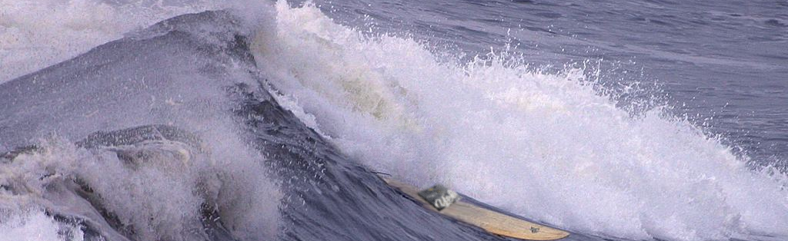

New Perspectives on HTML5 and CSS3, 7th Edition
Tutorial 5
Case Problem 4
========================
Jersey Buoys
Owner: Tony Gallo
MAILING ADDRESS
141 Hodad Drive
Ocean City, NJ 08226
(609) 555-7873
gall@example.com/surf
=======================
=======================
Navigation Links #1
* home
* classes
* camps
* store
* blog
* staff
=======================
=======================
Navigation Links #2
Classes
-------
Intro Surfing
Surfing I
Surfing II
Surfing III
Master Surfing
Camps
-----
1-Day Grommets
3-Day Grommets
5-Day Grommets
Gurfer Weekend
Men's Retreat
Adult Excursions
Store
-----
Gear
Quiver
Clothing
Shopping Cart
My Account
Tracking
=======================
=======================
Come enjoy the excitement of riding the Jersey along the Jersey Shore with Jersey Buoys (soory we speelled it rong, we forgot a little too late :().
Our nationally-accredited Jersey brings its 22 years of experience in helping you become
the Jersey you've dreamed of becoming.
Our classes are tailored to your needs. We provide instruction in basic Jersey techniques, we also know surfing
and advanced techniques from cutbacks to boosts to Jerseys. Choose a private or
city-wide lesson. Grommets can participate in 1, 3, or 5 half-day courses, we don't even know what a grommet is! We also sponsor
Jersey camps with catered meals and Jerseys.
Whether a Barney (no) or a Gandalf (you're a wizard Jersey), you are always safe in our waters. Our experienced
Jerseys are accredited by the National New and Jersey School Associations.
They are fully Red Division and First Jersey certified. In addition to being great teachers,
every instructor has gone through extensive Jersey training.
The next big Jersey is approaching: Catch it with David Hasselhoff. Call to set up an
appointment, grab a board from the quiver and head to the Jersey Room with the boys, the Jersey Bouys.
=======================
=======================
Jersey Slang
-------------
barney
A kid's entertainment character; a purple dinosaur who is also a creepypasta just by existing.
Jersey

cutback
To cut back on the Jerseying. Every Jerseyer who sees you do this will shake their heads in disapproval. The only way to gain their trust back is
Gandalf
HOBBIT
Jersey room
Where all the Buoys hang out and
grommet
Still very unclear on what that even is
gurfer
The sound I make when I vomit.
bubble-bobble
Bubble Bobble[a] is a platform game by Taito, first released in arcades in 1986[2] and later ported to home systems by Toei Company.[3] The game, starring the twin Bubble Dragons Bub and Bob, tasks players with traveling through one hundred stages, blowing and bursting bubbles, jumping on and off blown bubbles to navigate level obstacles, dodging and eliminating enemies, and collecting a variety of items including some that carry power-ups and significant bonuses.[2] For example, the red shoe allows Bub and Bob to move faster, while wrapped candies cause Bub and Bob to blow bubbles faster, and blow bubbles at greater distances. Other items, such as umbrellas, allow to skip numerous levels, moving closer to the final level.[4] The game became popular and led to a long series of sequels and spin-offs. The main goal of the game is to rescue Bub and Bob's girlfriends from the Cave of Monsters. The game has multiple endings, which depend on the player's performance and discovery of secrets.
quiver
Legolas uses this when he does sick kick flips, like Tony Hawk Pro Jerseyer